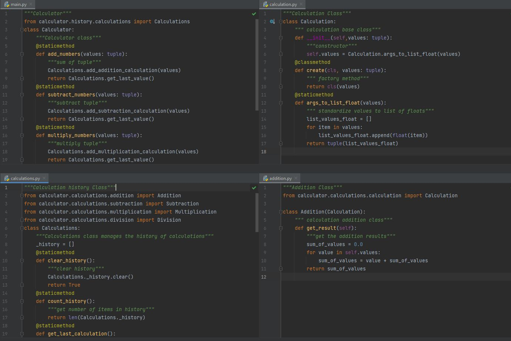
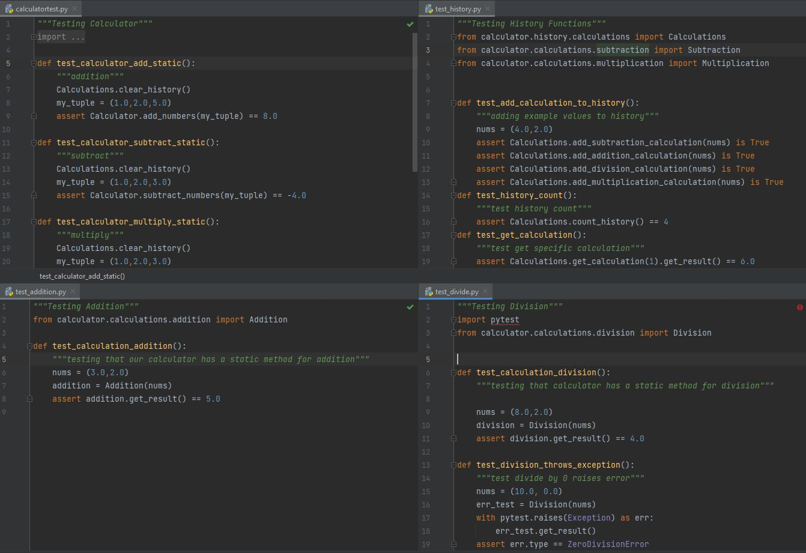

Introduction to Separation of Concerns
Separation of Concerns
Separation of Concerns is a design pattern where the functions, methods, and properties of a program are separated into distinct sections without overlap. This design pattern is often regarded as the most important for object oriented programming because it allows for easier editing of programs and easier reading for another person to read a program. When a program follows the separation of concerns pattern, it is easier for someone who did not write the program to read it because each property of the program is separated into a distinct section rather than into one jumbled mess in one file. This pattern also allows for easier modification of code later. Since each section is distinct, code segments can be edited without directly affecting another one.
A perfect example of the Separation of Concerns design pattern is the calculator program that we have been working with. The Calculator class is the main class for the calculator and contains methods for addition, subtraction, multiplication and division. It accepts a tuple input of values and returns the appropriate value, and adds the object to the history of calculations. The Calculation class serves as the base class for the different calculation subclasses which include addition, subtraction, multiplication and division. Each of these subclasses contains the method for the respected operation. The Calculations class is the class that handles the history for the program. It contains a list _history which holds calcualtion objects and the class contains methods like clear_history(), add_calculation() and more.
The Separation of Concerns design patterns is useful for writing programs as well as in the AAA testing for programs. In our calculator program, it follows this design pattern in its testing in addition to the program iteslf. calculatortest.py is the testing program that tests the four methods in the Calculator class. test_history.py tests all of the methods in the Calculations class. There are four more testing files that test the individual static operations of the subclasses of the Calculation class which include addition, subtraction, multiplication and division. This calculator program follows the Separation of Concerns design pattern for both the program itself as well as the testing files.